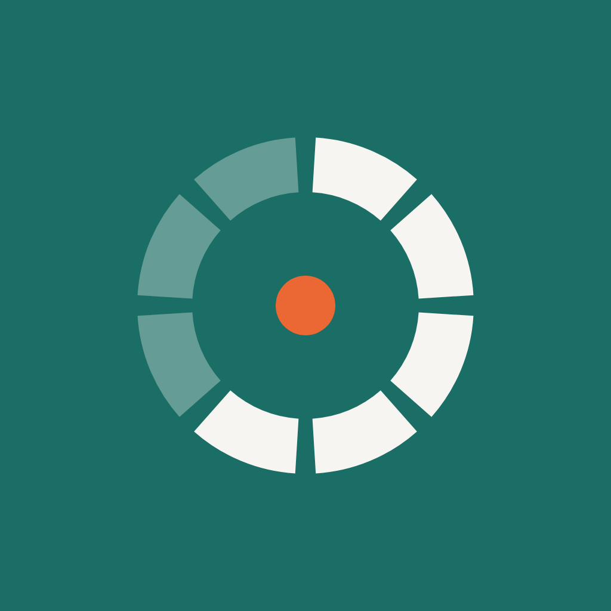
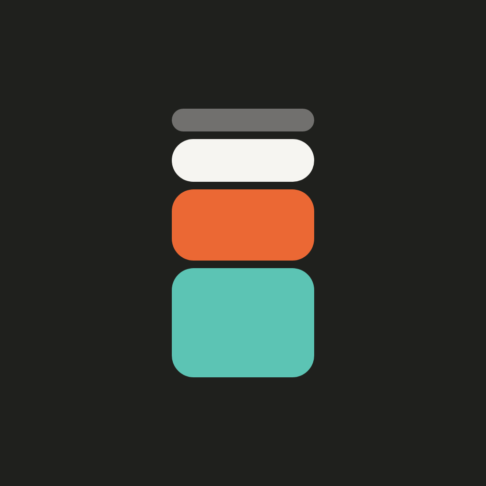
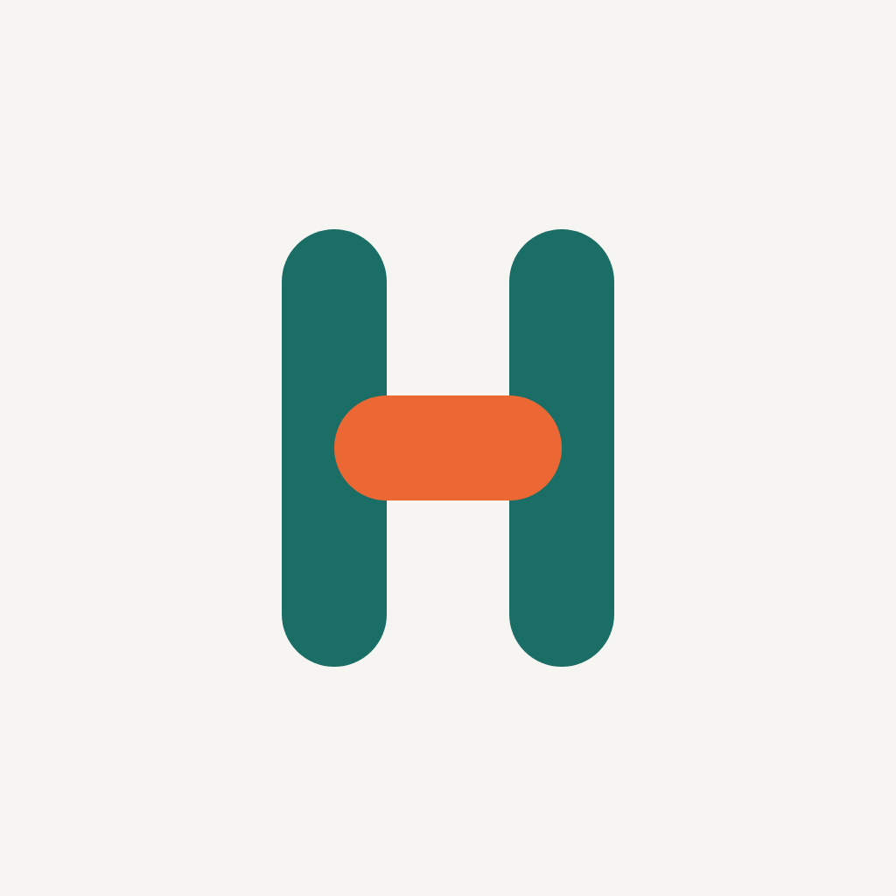
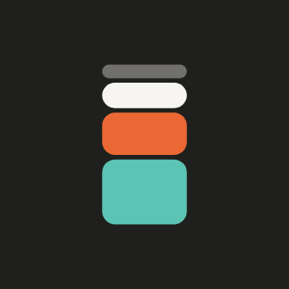
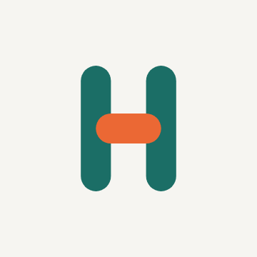

Three directions, each with an app icon and an animated splash. Mix freely, for example icon B with splash A. Every splash starts and ends on its resting mark, so the hand-off from Android's static splash is seamless.
Shown as Android will draw it: circle and rounded-square masks, at launcher size and at the small sizes where marks die. Light and dark wallpapers underneath.
Eight slots around a clock face with an orange hub: five answered, three still to come.

One day as a column of time chunks, the same shape as your History chart. Dark ground.

Two tall slots joined by a warm crossbar. The light one on the shelf.

1.8 seconds, loops. These are the real GIF files the app will play after Android's own splash.
A wave runs around the ring, lighting the slots still to come, and the hub swells.
The column collapses and stacks itself back up from the bottom, chunk by chunk.

The orange crossbar lifts away and drops back into the H.
